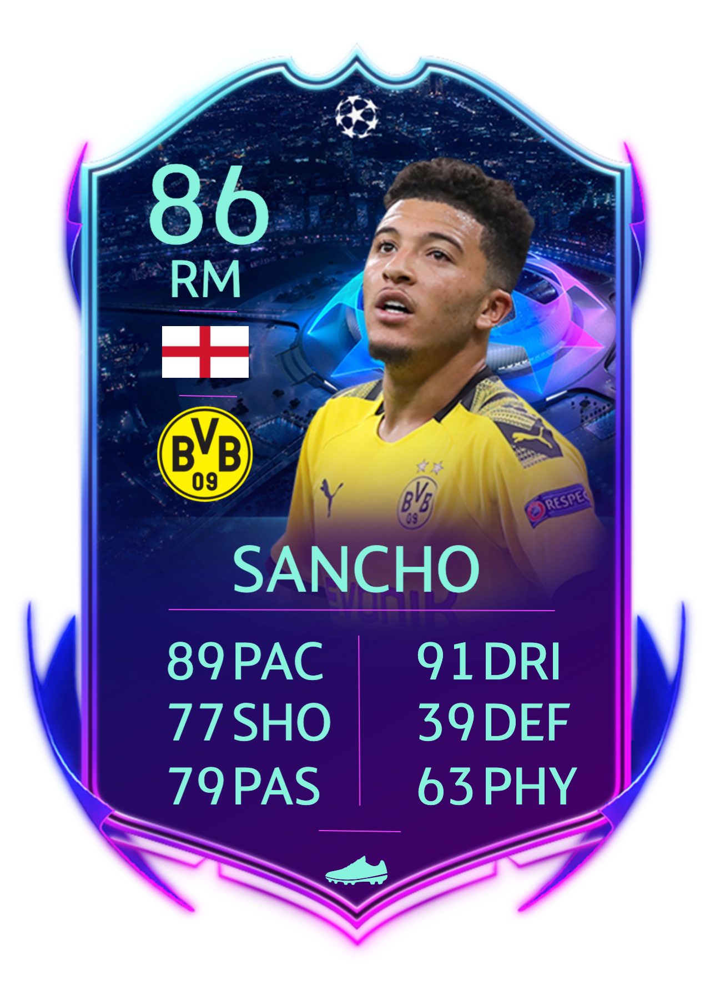

Jadon Sancho
Jadon Malik Sancho (Londen, 25 maart 2000) is een Engels voetballer die doorgaans speelt als vleugelspeler. In augustus 2017 verruilde hij Manchester City voor Borussia Dortmund. Sancho debuteerde in 2018 in het Engels voetbalelftal.
Clubcarrière
Sancho werd op zevenjarige leeftijd opgenomen in de jeugdopleiding van Watford. Die verruilde hij in 2015 voor die van Manchester City. Twee jaar later vertrok hij voor acht miljoen pond naar Borussia Dortmund. De Duitse club nam hem direct op in de selectie van het eerste elftal. Hij nam er het rugnummer 7 over van de naar FC Barcelona vertrokken Ousmane Dembélé. Sancho debuteerde op 21 oktober 2017 in het eerste elftal van de Duitsers, tegen Eintracht Frankfurt. Nuri Şahin en Maximilian Philipp brachten Dortmund op een voorsprong van 0–2, maar door Sébastien Haller en Marius Wolf kwam de thuisploeg langszij. De Engelsman mocht van coach Peter Bosz zes minuten voor het einde van de wedstrijd invallen voor Philipp. Met zijn invalbeurt werd Sancho de eerste Engelse speler in het eerste elftal van Borussia Dortmund. Op 14 januari maakte Sancho zijn basisdebuut voor Borussia Dortmund, in een doelpuntloos gelijkspel tegen Wolfsburg. Tegen Hertha BSC, een week later, was hij voor het eerst betrokken bij een goal, toen hij een assist gaf op Shinji Kagawa. De wedstrijd eindigde door mede een doelpunt van Davie Selke in 1–1. Op 21 april maakte hij zijn eerste doelpunt voor de Duitse club; hij scoorde de openingsgoal in een wedstrijd tegen Bayer Leverkusen. Door twee doelpunten van Marco Reus en één van Maximilian Philipp werd het uiteindelijk 4–0. De Engelsman kwam in het seizoen 2017/18 tot twaalf competitiewedstrijden met daarin één doelpunt. Op 18 september 2018 maakte de Engelsman zijn Europese debuut voor Borussia Dortmund, in de Champions League startte hij in de basis tegen Club Brugge (0–1 winst door Christian Pulisic). Hiermee werd hij de jongste Engelsman ooit die voor een buitenlandse club in actie kwam in de Champions League. Borussia Dortmund brak op 2 oktober 2018 het contract van Sancho open om deze te verlengen tot medio 2022. Tegen Atlético Madrid maakte Sancho op 24 oktober 2018 zijn eerste Europese doelpunt. Hij maakte op aangeven van Achraf Hakimi de derde van Dortmund die avond, nadat ook Axel Witsel en Raphaël Guerreiro tot scoren waren gekomen. Die laatste speler zorgde ook voor het slotakkoord: 4–0.